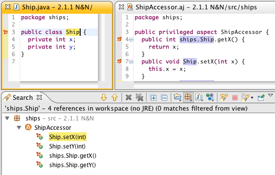
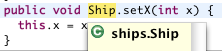
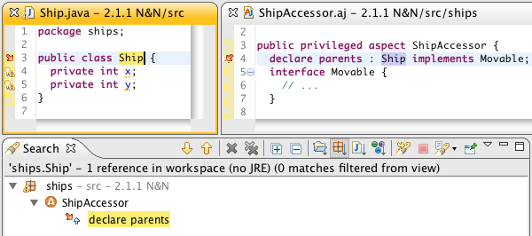
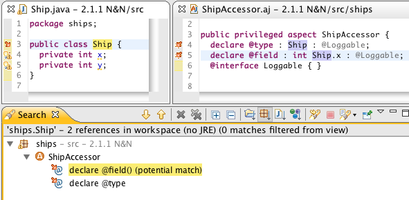
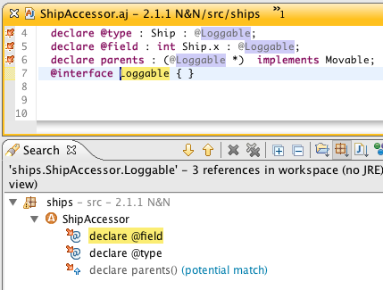
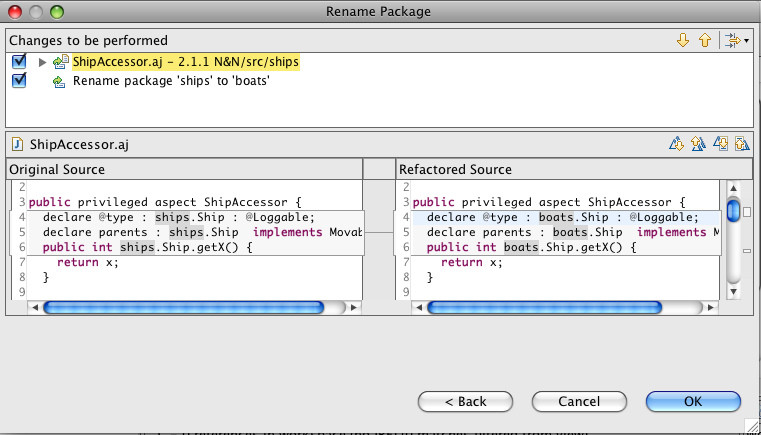
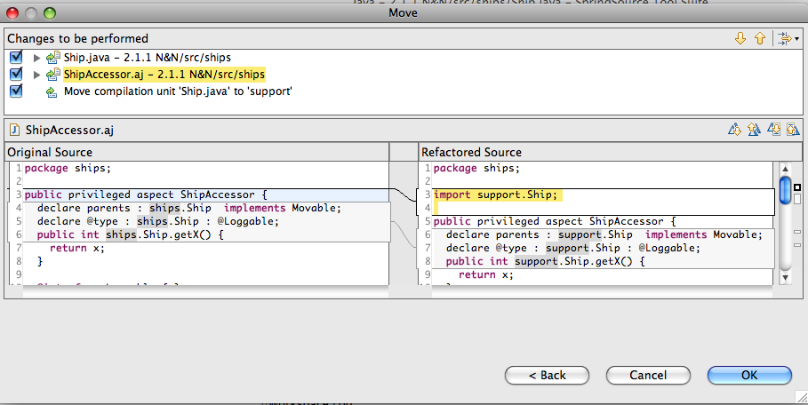
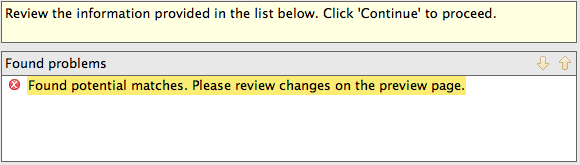
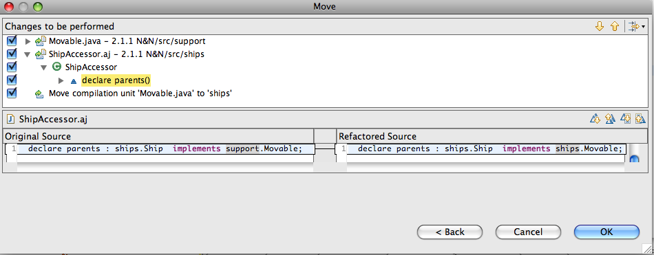

| Overview | In this release, we have focussed on searching and refactoring support for Intertype Declarations (ITDs) and Declare declarations. This will particularly benefit users of Spring Roo who will be better able to search and refactor source code that contains Roo-style aspects. |
|
|
|
Searching |
|
| Searching and hovers for ITD target types | Target types of intertype declarations now appear in the
search results when searching for type references:  Notice here that simple as well as fully qualified names are found through searches. Similarly, hovering over ITD target types will display its type information:  Navigation (i.e., hyperlinks and F3) works as well. |
| Searching inside Declare parents | Types referenced inside of declare parents declarations are
also returned in search results where appropriate:  |
| Searching inside Declare annotation | And finally, types referenced inside of declare annotation
declarations are similarly found when searching for references:  The annotation itself is also found through searching:  There are some limitations to these new searching features:
|
|
|
|
Refactoring |
|
| Rename refactoring | Rename refactoring is working in almost all situations.
Intertype declarations can be renamed; fields, methods, and types
referenced inside of Aspects will be appropriately renamed; and
AspectJ Compilation units will be renamed when appropriate. Most of
this work was completed for the 2.1.0
release, with some small fixes included in this release. The most significant improvement in this area is that package renames are properly reflected in fully qualified names that are referenced in aspects:  AJDT does not currently support the renaming of named pointcuts. |
| Move refactoring | Similarly, move refactoring is AspectJ-aware. Import
statements and fully qualified names will be properly updated in
Aspects when types and compilation units move. For example, moving
a type referenced by an Aspect will force import statements to be
added/removed and fully qualified names to be updated:
 Note that you will sometimes receive an error message like this:  This message means that there are some type reference matches that the refactoring is not sure about. This happens because there are some situations where AJDT cannot determine type bindings and performs matches on simple, rather than qualified, names. This message can generally be ignored, but you may want to examine all changes to make sure. It is also possible to drag and drop types, fields, and methods into aspects, with the same behavior as you would expect when the project is pure Java. For example, when dragging and dropping a type into an AspectJ compilation unit, fully qualifed references to that type are properly updated:  Note that currently, only drag and dropping of fields and methods into aspects are working. Using the Move Refactoring wizard is throwing exceptions. |
| Catalog of working refactorings in AJ files | In this release, we have done significant work in making
sure that the standard JDT refactorings are available when inside an
Aspect. We have focussed on the more widely used refactorings, and
left some of the less popular refactorings unimplemented. In addition
to the AspectJ-specific Push in and Pull
out refactorings, and the standard Rename and Move
here are the JDT refactorings that are currently known to work in
AJDT:
|
|
|
|
| AspectJ 1.6.10 | AJDT 2.1.0 includes AspectJ 1.6.10. See the readme for details. |
|
|
|
| Bug Fixes | See bugzilla for a list of bugs addressed in this release. |
|
|
|
| Previous Releases | See here for information on the new features in AJDT 2.1.0. |
|
|
|
| Thanks! | Thanks for community help and feedback during this release cycle. You can contact the AJDT team on the mailing list, and raise bugs on bugzilla. We also lurk on the AspectJ users list, and on the SpringSource Tool Suite forum. |